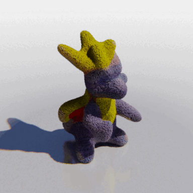
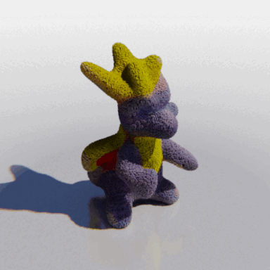

|
Georgia Gkioxari I am an Assistant Professor of Computing + Mathematical Sciences at Caltech and a William H. Hurt scholar. I am also a visiting researcher at Meta AI in the Embodied AI team. From 2016 to 2022, I was a research scientist at Meta's FAIR team. I received my PhD from UC Berkeley, where I was advised by Jitendra Malik. I did my bachelors in ECE at NTUA in Athens, Greece, where I worked with Petros Maragos. I am the recipient of the PAMI Young Researcher Award (2021). My teammates and I received the PAMI Mark Everingham Award (2021) for the Detectron Library Suite. I was named one of 30 influential women advancing AI in 2019 by ReWork and was nominated for the Women in AI Awards in 2020 by VentureBeat. Read more about me and my work in this Q&A. |

|


 
